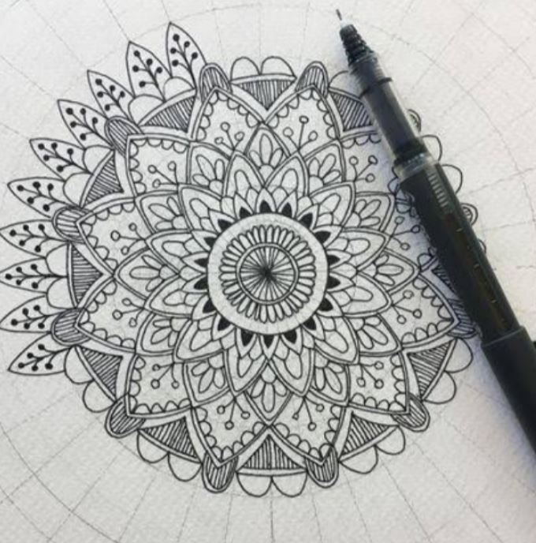
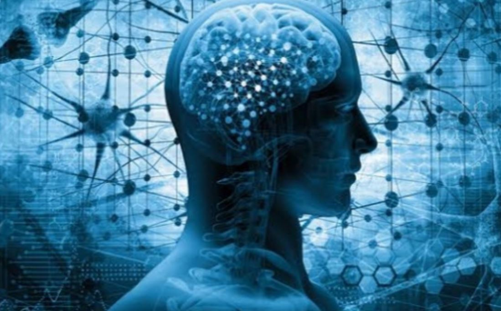
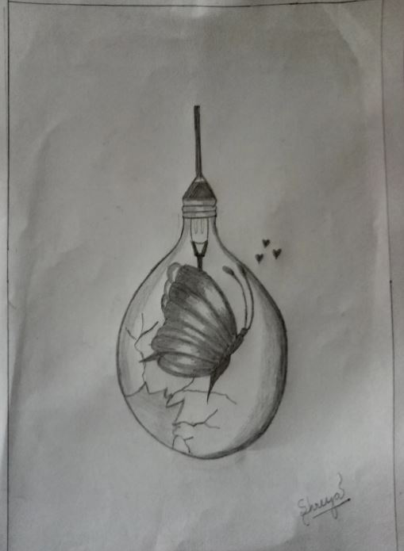

Art can permeate the deepest part of us where no words exist. Art helps to better our mental health. Simple form of art like drawing can increase cerebral activities that leads to release of neurotransmitters and hence gives the feeling of euphoria. The role played by art therapy in betterment of mental health is truly commendable.
Every child is an artist. The problem is how to remain an artist once we grow up. However in our daily hustle bustle our mental health gets affected a lot. As a consequence of this we suffer from stress, hypertension etc. At this point we depend on pills to improve our condition rather than trying to better our dopamine secretion naturally. Art therapy like mandala drawing and colouring has proved a very efficient stress buster. Psychologist have also found people suffering from trauma can express their thoughts n feelings easily through art.
Art helps to improve concentration. U don't need to be born artist to draw or paint. It's true that the creative energy of every individual is variable.But everyone has some amount of creativity in them.Even if we can't create a beautiful piece of art , we can at least doodle. Even doodling helps improve our focus n increase our concentration power.
Art can help us create a better connection with ourselves. It helps us to give up addiction like smoking. We become conscious of our subtle thoughts and connect with ourselves better. In this rat race sometimes it's necessary to take a break and listen to our inner thoughts so that we can try to give up our ill habits.
Art speaks more eloquently than words. So rather than getting bored these days let's take up art as a hobby and try to remain calm n relaxed even in this tensed atmosphere. Picture below is a piece of art that I created during this lock down period 😁😁.
